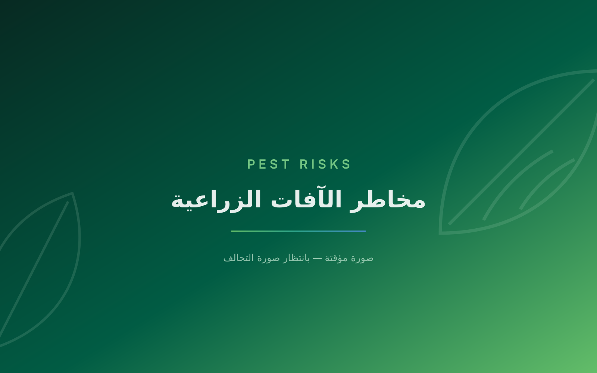
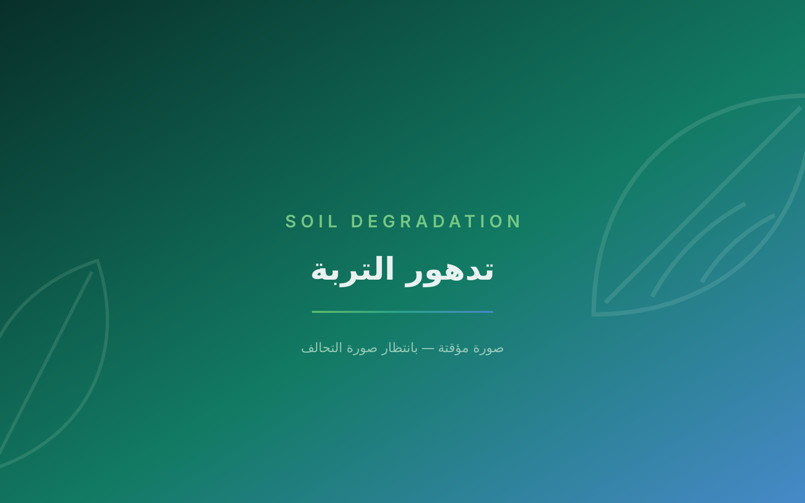
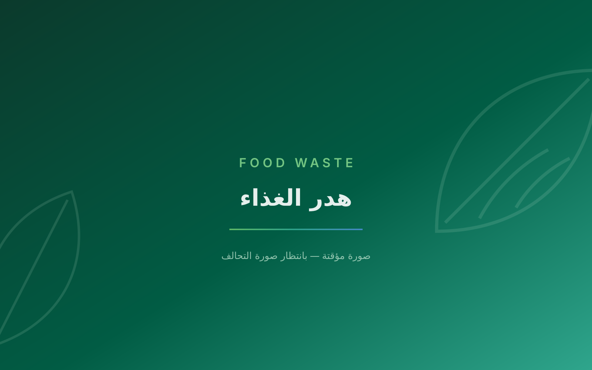
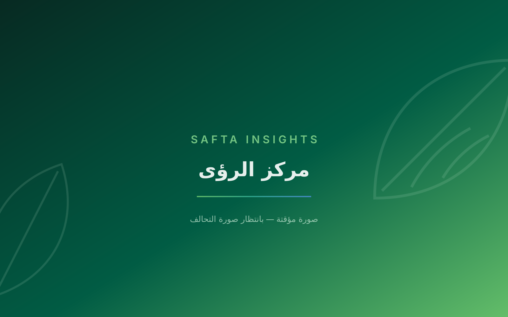

SAFTA Insights
Applied knowledge that supports technology-adoption decisions across the Kingdom's agrifood sector.
Announcements
SAFTA is attending WAFI2026 from September 17 to 19, 2026, in Pinggu, Beijing, China
Discover SAFTA
We are Saudi Arabia’s national alliance for agrifood technology, bringing together government entities, research institutions and the private sector to strengthen food security.
Challenges
The agrifood sector is facing a range of interconnected challenges that are affecting productivity, sustainability, food security, and economic resilience.

Harsh climate conditions

Pest risks

Soil degradation

Food waste

Import dependency and food security exposure

Technology and extension gaps
Launching Soon
Excellence
SAFTA Excellence Awards
An annual award recognising the entities and teams delivering measurable impact in the Kingdom’s agrifood technology — nominated by members and assessed by an independent panel.
Register your interest to nominateInnovation of the Year
A technology solution with proven impact on productivity or resource efficiency.
Water Stewardship
The best documented reduction in irrigation water use.
Working Group of the Year
The group with the strongest research and applied output.
Emerging AgriFood Startup
A Saudi startup with a scalable solution.
National Talent Impact
A programme that built national capability in the sector.